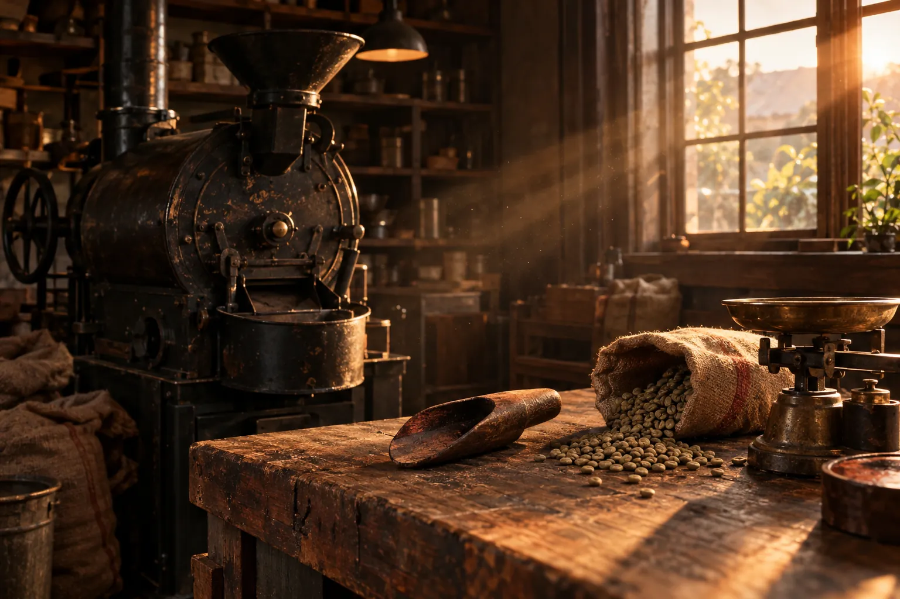

二代目として
継ぐ気は、1ミリもなかった。

こんにちは。お日様珈琲の二代目、日向陽介と申します。
創業者である父は、「自分自身がいいと思えるものだけをつくる」をモットーに、お日様珈琲を立ち上げました。
生豆から、手間をかけて良い豆だけを選び抜く。量をこなすのではなく、質を求めて、あえて非効率を選ぶ。効率を選べば、もっと広く流通させることも出来たはずです。父は、その選択肢を外しました。
父は頑固者でした。近寄りがたい人でした。けれど、その頑固さが職人のこだわりとして息づき、お日様珈琲が生まれました。
私は、父の後を継ごうとは1ミリも思っていませんでした。それでも、知らないうちに受け継いでいた職人肌が目を覚ましたのか、質より量を求める働き方に馴染めなくなり、気づけば父の背中を追っていました。
この珈琲を新しい時代に届ける手段として、ネットでの販売を考えました。でも、他人には任せたくなかった。機械で豆を選別するのを嫌うのと同じ様に、自分の言葉で伝えたかったのです。いまの通販の仕組みは、悪戦苦闘しながら自分で作りました。私も、父と同じ頑固者なのかもしれません。
なぜ人は、珈琲を飲むのでしょうか。
ひと息入れるため。
自分を確かめるため。
何かに挑もうとする心を、奮い立たせるため。
あの香りとともに、口の中にまろやかなコクと苦味が広がる。言葉にしなくても、自分を肯定してくれる味方の様に、その時間が包み込んでくれる。私も、珈琲が大好きです。
お日様珈琲は、あなたの毎日に、自分のためのひとときをつくるお手伝いをします。ぜひ一度、召し上がってみてください。
お日様珈琲 二代目 日向 陽介
まずは少しの量から、確かめてみてください。
お日様珈琲を体験してみる